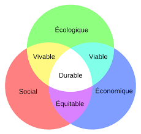
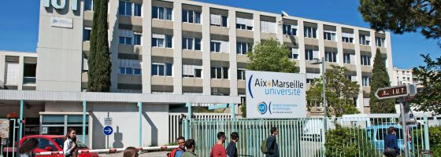

ECO-AMU est le nom d'un groupe de projet tutoré d'un IUT qui fait parti de l'Academie d'Aix-Marseille, plus spécifiquement localisé sur le site d'Aix-en-provence. Nous faisons parti du département informatique de cet IUT. Notre groupe est constitué de CHARRAT Romain, DE SALEON-TERRAS Baptiste, GOERES Olympe, MADONIA Vincent, RARRBO Abdallah et ROY Thomas.

D’après le Programme Pédagogique National (PPN), l’objectif du Projet Tutoré du semestre 2 est “une mise en oeuvre de la méthodologie du projet”. Notre IUT nous a donc demandé de réaliser un projet pour démontrer notre capacité à mettre en oeuvre la méthodologie du projet pour explorer de nous-même un sujet. La réalisation du projet a une durée de 4 mois, soit de Février à Juin 2020.
Nous avons donc choisi un sujet pour le projet qui est en lien avec le développement durable, que notre tutrice Mme Céline PASCUAL, enseignante à l’IUT informatique d’Aix de l’AMU, nous avait proposé ainsi que la réalisation d’un site internet dit “site vitrine”. Ce projet permettra de proposer et de réaliser certaines solutions à l’IUT pour le rendre plus éco-responsable et avoir un lien plus important avec le développement durable.
Avant de pouvoir développer les Objectifs et le projet en lui même, il faut d’abord comprendre ce que signifie le développement durable : “Le développement durable est l’idée que les sociétés humaines doivent vivre et répondre à leurs besoins sans compromettre la capacité des générations futures à répondre à leurs propres besoins.” Ceci est la définition du développement durable, il fait l’objet d’une attention de plus en plus importante. Pensons par exemple aux nombreux articles consacrés aux pollutions engendrées par l’activités des grandes firmes, la pollution atmosphérique, aux problèmes de mobilité, aux milieux naturels, au réchauffement climatique de la planète, … Chacun peut tirer profit d’une politique de développement durable et chacun peut facilement y contribuer. Pour mieux comprendre en quoi sera consiste, nous pouvons nous pencher sur les trois piliers du développement durable :

Cliquez ici pour plus de renseignement sur le développement durable
L'IUT auquel nous appartenons est situé à Aix-En-Provence, il fait parti de l'Academie d'Aix-Marseille dans le sud de la france. Cet IUT dispose de plusieurs diplomes, notamment le département informatique auquel nous appartenons. L'enseignement allie une démarche théorique à des applications pratiques dans le domaine informatique (systèmes d'informations, algorithmique, programmation, réseaux, bases de données, génie logiciel, interfaces graphiques,...), et dans la formation générale (mathématiques, anglais, expression-communication, organisation, économie, gestion). 145 postes de travail connectés en réseaux locaux et à Internet permettent des scéances de travaux pratiques individualisés.
Le programme pédagogique national se décline en modules d'informatique et de culture scientifique, sociale et humaine répartis sur les 4 semestres. Le stage du 4e semestre se déroule sur 10 semaines. La deuxième année peut se faire en alternance. Le rythme d'alternance est en général de 1 mois en entreprise / 1 mois à l'IUT, la fin de l'année se déroule uniquement en entreprise.
Plus de renseignement sur notre IUT ici

Copyright 2020 ECO-AMU